ORVIK ユーザーマニュアル (2.0)
ORVIK の画面と各要素を説明します。図の番号は下のリストの番号と同じです。2.0 はネイティブアプリ (C++ / JUCE) で、このマニュアルは 2.0 の画面に基づきます。
1はじめに
ORVIK とは
ORVIK は CDJ, DJM の再生情報を受け取り, 照明や映像のソフトウェアへ送るアプリです。TCNet, SMPTE タイムコード (LTC, MTC, Art-Net), OSC, DMX (Art-Net, sACN), MIDI, MIDI Clock で出力します。セットリストのキューをキューコールウィンドウでスタッフに示し, 読み上げることもできます。機器には情報を要求するだけで, 制御はしません。
動作環境
| 項目 | 内容 |
|---|---|
| OS | macOS 13.3 以降 (Apple Silicon), Windows 10, 11 (x64) |
| 確認済みの機器 | CDJ-3000X, CDJ-3000, CDJ-2000NXS2, DJM-V10, DJM-900NXS2 |
受け取れる情報は機器, ファームウェア, 接続構成によって異なります。
インストールと起動
- macOS — DMG を開き, ORVIK をアプリケーションフォルダへ移します。
- Windows — ダウンロードした
.exeをそのまま実行します。インストーラーはありません。コード署名がないため, 初回に SmartScreen の警告が出たら「詳細情報」を押してから「実行」を選びます。
起動時と終了時に短いスプラッシュ画面が出ます。終了時は TCNet と PRO DJ LINK の接続を閉じてから終わります。
はじめての接続
- このコンピューターをプレーヤーとミキサーのネットワーク (同じスイッチまたはルーター) につなぎます。Arena への TCNet は同じネットワークからも, 2 つ目のアダプターからも送れます。
- ORVIK を起動します。PRO DJ LINK と TCNET は自動でオンになります (設定の PRO DJ LINK を自動で開始 と TCNet を自動で開始)。オンにならなければヘッダーでオンにします。
- プレーヤーが DECKS と NETWORK に出ます。自動検出 では CDJ が見えるアダプターを使います。アダプターを固定するには設定の PRO DJ LINKインターフェース で選びます。
- 機器が出なければ, NETWORK に接続構成の問題と対処が出ます。12.1
macOS では「システム設定 > プライバシーとセキュリティ > ローカルネットワーク」で ORVIK を許可します。Windows ではファイアウォールに尋ねられたら ORVIK を許可します。ルーターのないアダプターはパブリックネットワークとみなされるため, パブリックネットワークも許可します。
2画面構成
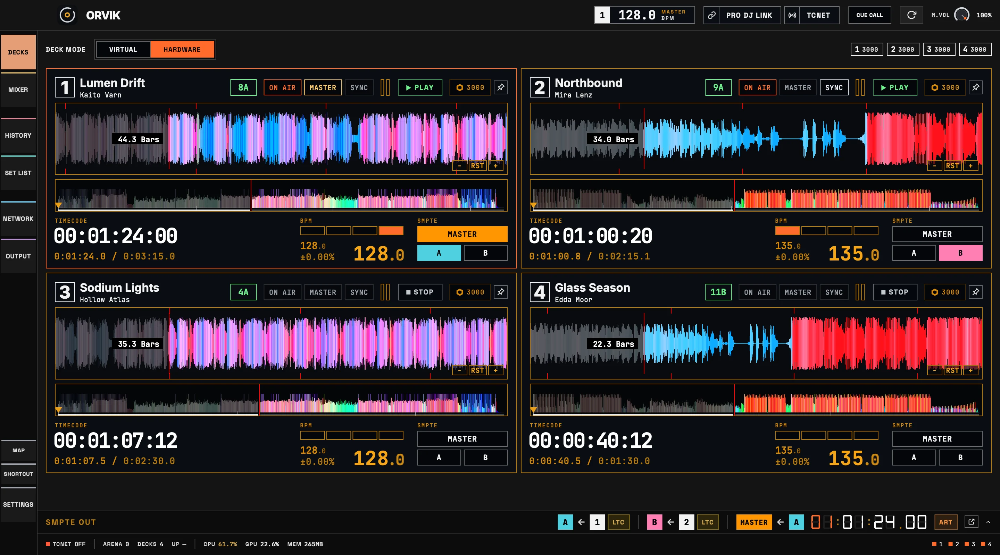
- ヘッダー — マスター BPM, PRO DJ LINK, TCNET スイッチ, CUE CALL ボタン, 音量, ウィンドウボタン。3 章
- サイドバー — ページを選びます。4 章
- ページ — サイドバーで選んだ画面です。図は DECKS ページです。
- SMPTE OUT ドック — タイムコード出力の確認と調整。押すと展開します。7 章
- ステータスバー — 送出とアプリの状態。5 章
CUE CALL ウィンドウをメインウィンドウにドッキングすると, ページの右にキューコールパネルが出ます。11 章
3ヘッダー
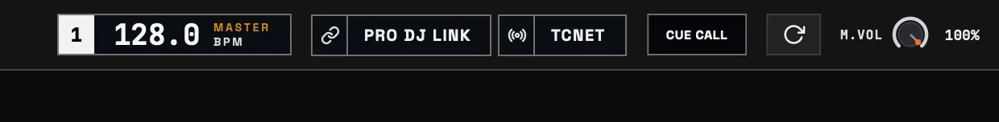
- MASTER BPM — CDJ マスターの BPM です。CDJ マスターに BPM がなければ再生中のデッキの BPM が出て, オンエアのデッキが優先されます。左の枠は CDJ マスターのプレーヤー番号です。
- PRO DJ LINK — CDJ, DJM との接続をオン/オフします。
- TCNET — 照明, 映像ソフトへの TCNet 送出をオン/オフします。設定の TCNet モードが Client のとき, または STANDBY のときは, オンでも送出しません。
- CUE CALL — キューコールをメインウィンドウの右にドッキングして開きます。もう一度押すとすべてのキューコールが閉じ, Alt+クリック(Mac は Option+クリック)で別ウィンドウとして開きます。キューコールが開いている間, ボタンは塗りつぶされたままです。11 章
- 再読み込み — 画面を読み込み直します (Cmd/Ctrl+R)。バーチャルデッキの再生は止まります。
- M.VOL — アプリが出力するバーチャルデッキの音量です。CDJ やミキサーの音には影響しません。
- ウィンドウボタン — Windows でウィンドウの最小化, 最大化, ORVIK の終了をします。macOS ではウィンドウ左上の標準ボタンを使い,「ウインドウ」メニューに「しまう」(⌘M) と「閉じる」(⌘W) があります。保存していないヒストリーやセットリストがあると, 終了時に保存するか尋ねます。
スイッチの状態
PRO DJ LINK, TCNET スイッチはオンになると左の枠が状態の色で塗られます。正常なら緑, オンにしている間は点が点滅します。確認が必要なときはスイッチ内に次の表示が付きます。
| 表示 | 意味 |
|---|---|
| NO H/W | PRO DJ LINK はオンですが CDJ, DJM が見えません。 |
| LOST | ハードウェアデッキはありますが, どの CDJ からも 1.5 秒以上ステータスが来ていません。 |
| STANDBY | 同じネットワークに先に起動した TCNet サーバーがあり, 送出を止めて待機中です。 |
接続構成のためにプレーヤーやミキサーが ORVIK に届かないときは, PRO DJ LINK スイッチにマウスを乗せると何が問題かが出ます。12.1
新しいバージョンが出るとヘッダーに UPDATE 表示が出ます。押すとダウンロードページを開きます。
4サイドバー
| メニュー | 内容 |
|---|---|
| DECKS | デッキごとの波形, タイムコード, 再生状態 |
| MIXER | DJM のチャンネルフェーダー, EQ, レベルインジケーター |
| HISTORY | オンエアになった曲の記録 |
| SET LIST | セットリスト, 曲ごとのタイムコードオフセット, キュー編集 |
| NETWORK | PRO DJ LINK 機器, TCNet ノード, 接続構成の警告 |
| OUTPUT | デッキ, ミキサーの値を OSC, DMX (Art-Net, sACN), MIDI で送るノードエディターと, Art-Net のネットワーク, タイムコードの設定。13 章 |
| MAP | MAP をオン/オフします。画面のボタンを押し, キーを押すか MIDI, DMX を送って割り当てます。14 章 |
| SHORTCUT | キーボード, MIDI, OSC, DMX の入力と割り当ての一覧。14 章 |
| SETTINGS | 設定ウィンドウを開きます。もう一度押すと閉じます。15 章 |
メニューは上から DECKS と MIXER, HISTORY と SET LIST, NETWORK と OUTPUT の組に分かれています。MAP と SHORTCUT は一番下の SETTINGS の上にあります。
5ステータスバー
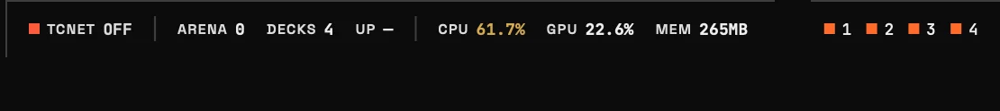
- TCNET — ヘッダーの TCNET スイッチがオンかどうかです。STANDBY のときは ON でも送出しません。
- ARENA — 直近 10 秒に確認された TCNet ノード数です。
- DECKS — ハードウェアデッキと, 曲が載ったバーチャルデッキを足した数です。
- UP — エンジンが起動してからの時間です。
- CPU — ORVIK の CPU 使用率です。
- GPU — ORVIK がグラフィックカードの時間を使う割合です。システムが報告する場合に出ます。
- MEM — ORVIK が使うメモリ量です。
- デッキの点 — デッキごとに点が 1 つです。ハードウェアデッキはハードウェアの色, バーチャルデッキは再生, キュー, 曲あり, 空に応じた色で出ます。
問題があるとステータスバーに LINK, OUT, MIX の表示が出ます。LINK はプレーヤー番号の重複または接続構成の問題 (例: PDJL 機器の受信なし, PDJL 別サブネット), OUT は TCNet 送出の停止またはミラー状態, MIX はミキサーデータの途絶です。押すと関連ページへ移動し, 問題がなければ出ません。
6DECKS
6.1 デッキモードと接続機器
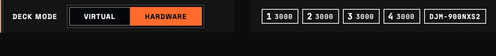
- デッキモード — HARDWARE は PRO DJ LINK ネットワークの CDJ に従います (既定)。VIRTUAL はコンピューターのオーディオファイルを再生するバーチャルデッキを使います。モードを変えると今のデッキは消え, バーチャルデッキがあるときに HARDWARE へ変えると先に確認します。6.4
- CDJ — 接続中のプレーヤーの番号と機種です。マウスを乗せると IP アドレスが見え, 右クリックでデッキの色を選びます。
- DJM — 接続中のミキサーの機種です。ミキサー操作値が 1.5 秒以上来ないと NO DATA が付きます。
6.2 デッキカード
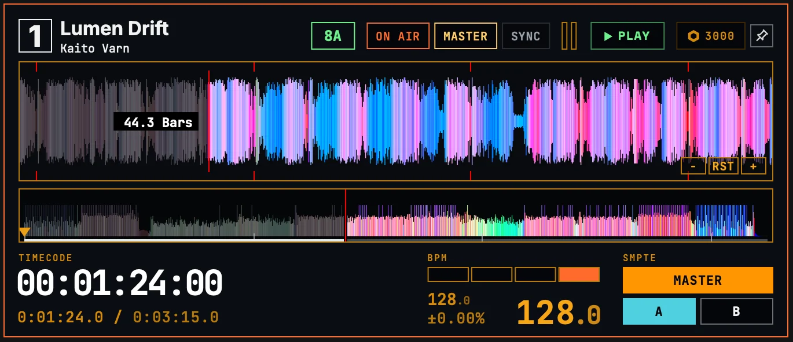
図は FLOW レイアウトのデッキカードです。レイアウトによって一部の要素が省かれたり位置が変わります。
- プレーヤー番号 — 右クリックでデッキの色を選びます。
- 曲名, アーティスト
- キー — 曲のキーです。8A のようなキャメロット表記に変えて出し, 変換できないキーは元の値のままです。
- ON AIR — ミキサーでこのデッキのチャンネルがオンエアのときに点きます。
- MASTER — このデッキが CDJ マスターのときに点きます。
- SYNC — Beat Sync がオンのときに点きます。
- チャンネルフェーダー, レベルインジケーター — DJM のチャンネルフェーダー位置とチャンネルレベルです。
- 再生状態 — PLAY, PAUSE, CUE, LOOP などです。
- 機種, メディア — CDJ の機種と, 曲の入ったメディア (プレーヤー番号と USB, SD) です。メディアチップの色は rekordbox で決めたメディアの色で, 色を決めていないメディアは灰色です。色情報がなければチップの代わりに文字で出ます。
- 大きく固定 — FLOW レイアウトでこのデッキを大きく固定します。もう一度押すか曲が変わると解除されます。
- ディテール波形 — 再生位置周辺の波形です。赤い線が再生位置です。
- 小節カウンター — 次のメモリーキューまでの小節数です。8 小節以下で赤くなり, 先にメモリーキューがなければ経過した小節が出ます。押すと秒単位に変わります。
- ズーム — − で波形を広く (押すたびに 2 倍), + で狭く (最小 0.5 秒) 見ます。RST は既定の 8 秒に戻します。
- オーバービュー波形 — 曲全体の波形です。ハードウェアデッキでは押している間その位置のディテール波形を先に見せ, 離すと戻ります。プレビュー中は小節カウンターに再生位置との差が秒または分:秒で出ます。
- タイムコード — 今の再生位置のタイムコードです。
- 時間 — 押すと経過時間と残り時間が切り替わります。右は曲の長さです。
- ビート位置 — 小節の中で今何拍目かを示します。
- BPM — 左上は曲の元の BPM, その下はテンポ変更 (%), 右の大きな数字は今の BPM です。
- SMPTE MASTER — このデッキをレイヤー A または B に割り当て, そのレイヤーを MASTER のソースにします。もう一度押すと MASTER ソースだけ解除され, A, B の割り当ては残ります。LTC, MTC, Art-Net の出力は SMPTE OUT で別にオンにします。
- SMPTE A, B — このデッキを SMPTE レイヤー A または B のソースにします。
波形の色を 3band にしていて曲に 3band データがないと, デッキに ! が付き RGB で出ます。波形はグラフィックカード (GPU) で描きます。
6.3 レイアウト
デッキ画面の配置は 4 種類です。設定の レイアウトテーマ で選びます。
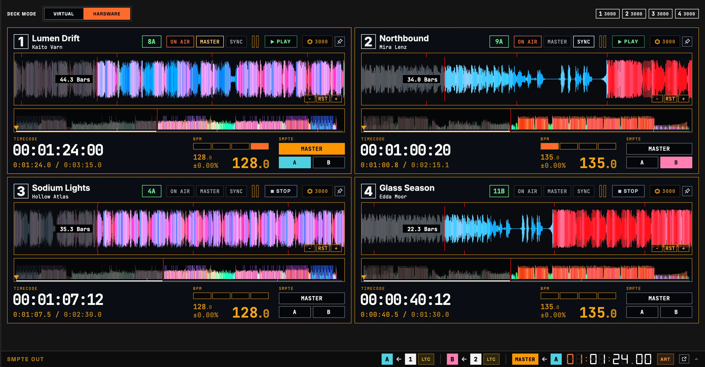
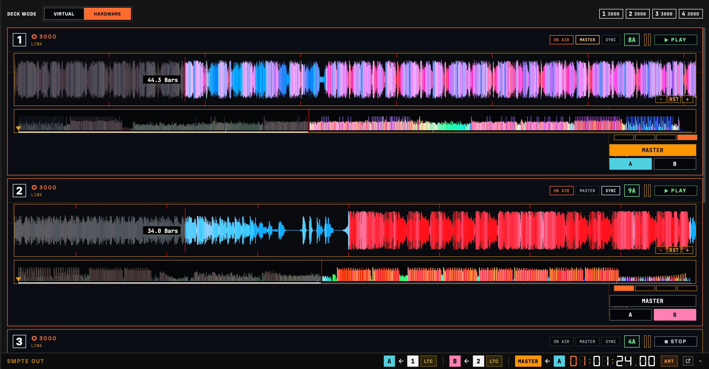
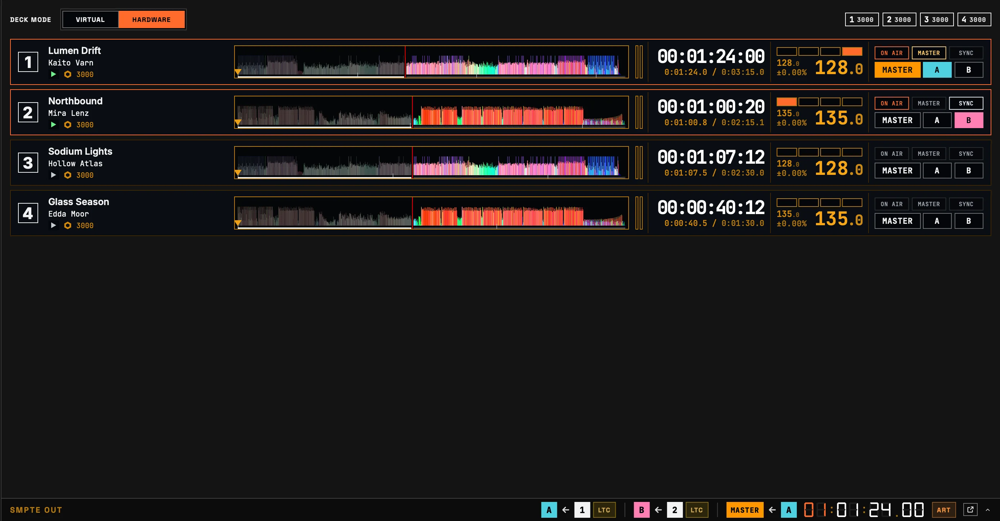
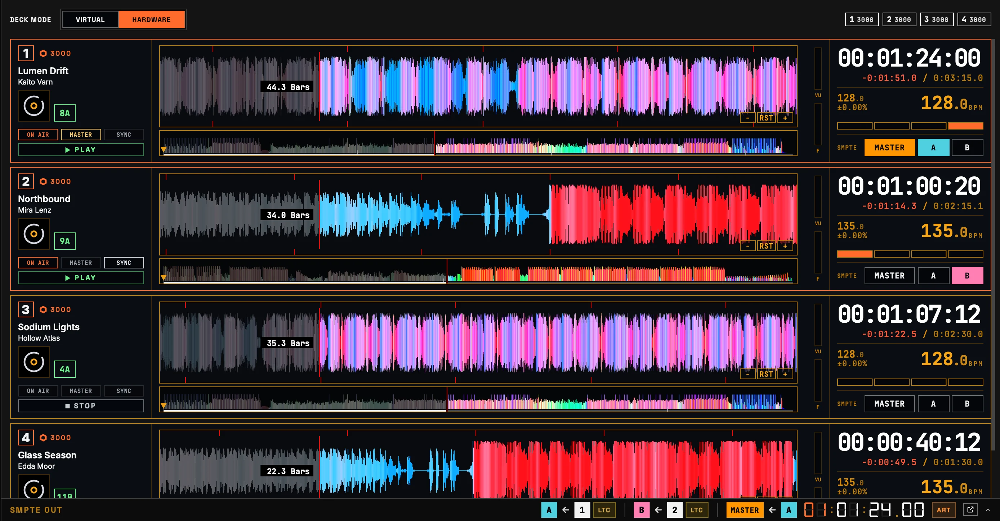
6.4 バーチャルデッキ
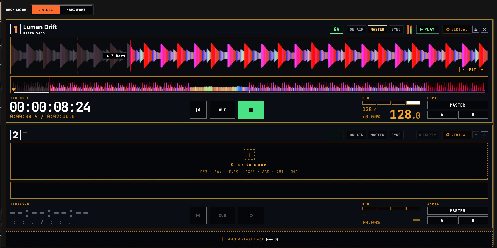
デッキモードを VIRTUAL にすると, コンピューターのオーディオファイルを再生するバーチャルデッキを使います。バーチャルデッキはレイアウトテーマに関係なく常に FLOW のカードを使い, 再生ボタン (⑧) はタイムコードと BPM の間にあります。図は曲を載せたデッキと空のデッキです。
- デッキ番号
- VIRTUAL — バーチャルデッキであることを示します。このコンピューターのファイルを再生します。
- × — このバーチャルデッキを削除します。
- チャンネルフェーダー — ドラッグで調整します。
- 取り出し — 曲を降ろします。
- ディテール波形 — ドラッグで再生位置を前後に動かします。
- オーバービュー波形 — 押すかドラッグして再生位置を動かします。
- |◀, CUE, ▶ — CUE は停止中に押すとその位置をキューポイントにし, 押している間再生します。再生中に押すとキューポイントへ戻ります。▶ は再生と一時停止, |◀ は停止して曲の先頭へ戻ります。
- 開く — 押してオーディオファイルを選ぶか, ここへファイルをドロップします。
- バーチャルデッキを追加 — バーチャルデッキを 1 つ増やします。最大 6 つです。
開けるファイルは MP3, WAV, AIFF, FLAC, AAC, M4A (AAC, ALAC), OGG, MP4 (オーディオ) です。CDJ が開く形式はすべて開けます。
バーチャルデッキの音は設定の オーディオ出力 で選んだ機器から出て, 音量はヘッダーの M.VOL で調整します。
7SMPTE OUT
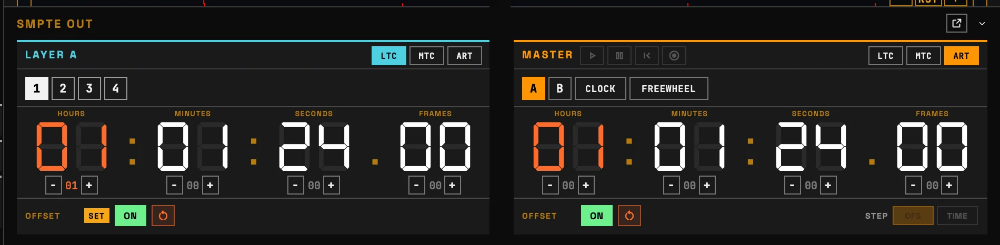
タイムコード出力レイヤーは A, B, MASTER の 3 つです。レイヤー A, B は選んだデッキの再生位置を, MASTER は A, B レイヤー, コンピューターの時計, FREEWHEEL のいずれかをタイムコードとして出します。図はレイヤー A と MASTER で, レイヤー B は A と同じです。
- SMPTE OUT — 押してドックを展開, 折りたたみます。折りたたみ時はレイヤーごとのつながりと, オンの出力を表示します。A ← 1 はレイヤー A がデッキ 1 に従うこと, MASTER ← A は MASTER がレイヤー A を出すことを示し, その後に MASTER のタイムコードが続きます。
- 別ウィンドウで開く — SMPTE OUT を別ウィンドウで開きます。閉じるとドックに戻ります。
- レイヤー A — 選んだデッキの再生位置をタイムコードで出すレイヤーです。レイヤー B も同じです。
- ソースデッキ — このレイヤーが従うデッキを選びます。デッキカードの A, B ボタンと同じです。
- タイムコード — ソース位置にオフセットを足したタイムコードです。実際の送出には設定の レイテンシ補正 が加わります。
- − / + — 各桁の値を 1 ずつ変えます。Ctrl (Mac は Cmd) を押しながらで 10 ずつです。MASTER の STEP が TIME なら FREEWHEEL 時間を, それ以外はオフセットを変えます。
- SET — セットリストのオフセットがこのレイヤーに入っている表示です。マウスを乗せると曲名が見えます。リストにない曲で UNLISTED のオフセットが入ると SET — と出ます。
- OFFSET ON — オフセットを送出に含めるか外すかです。値はそのままです。
- 戻す — オフセットを 0 に戻します。
- MASTER — MASTER レイヤーです。
- FREEWHEEL ボタン — ▶ は FREEWHEEL タイムコードを走らせ, ❚❚ は値を保ったまま止めます。|◀ は 00:00:00:00 に戻します。READY (◉) を押すと FREEWHEEL は今の値で止まって待ち, デッキが新しく再生を始めたときに出発します。ミキサーがあればその瞬間オンエアのデッキだけを数え, すでに再生中のデッキと CUE のプレビューは数えません。
- ソース — A, B はそのレイヤーのタイムコードに MASTER オフセットを足して出します。CLOCK はコンピューターの時計を使い, FREEWHEEL は直前の MASTER 値から単独で進みます。
- STEP — MASTER ソースが FREEWHEEL のとき, − / + ボタンがオフセット (OFS) を変えるか FREEWHEEL 時間 (TIME) を変えるかを選びます。
設定の 停止中も LTC を出力 がオン (既定) なら, 止まったデッキの LTC は停止位置のタイムコードを出し続けます。受信側が停止を判別できるよう同じフレームが繰り返されます。オフにすると, デッキが止まっている間 LTC は無音になります。
8MIXER
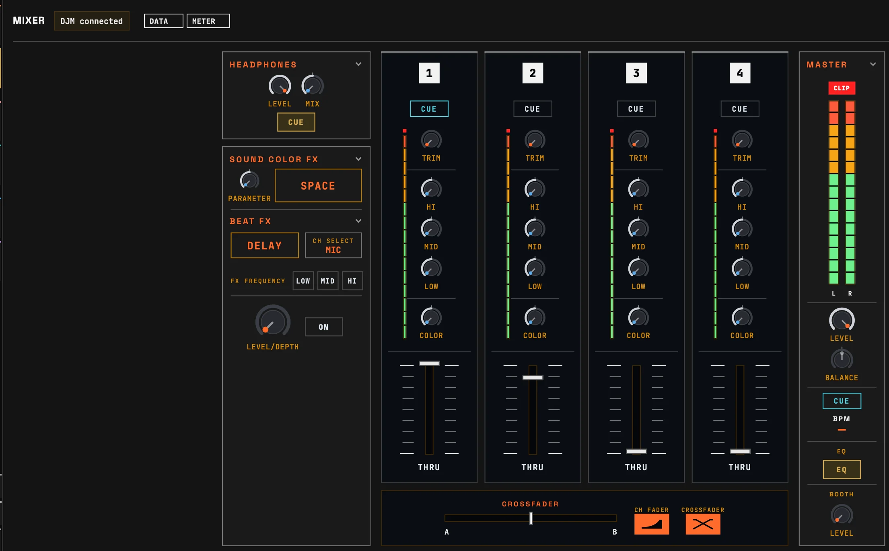
DJM が送るミキサーの状態を表示します。ORVIK はミキサーの設定を変えません。チャンネル数と一部の項目は DJM のモデルによって異なります。
- DJM 接続状態 — DJM が見えているかを示します。
- DATA, METER — DATA はフェーダー, EQ などの操作値が, METER はレベルインジケーターの値が来ているかを示します。
- HEADPHONES — ヘッドホンのセクション。8.1
- SOUND COLOR FX — サウンドカラー FX のセクション。8.1
- BEAT FX — ビート FX のセクション。8.1
- チャンネル — チャンネルごとに同じセクションが並びます。8.2
- クロスフェーダー — クロスフェーダー位置と CH FADER, CROSSFADER カーブです。
- MASTER — マスターのセクション。8.3
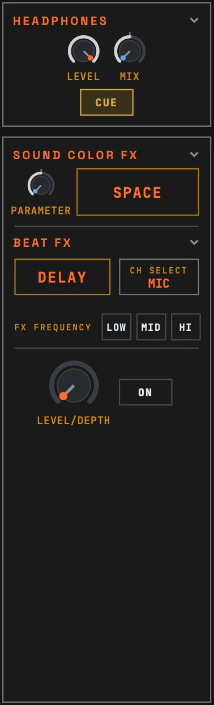
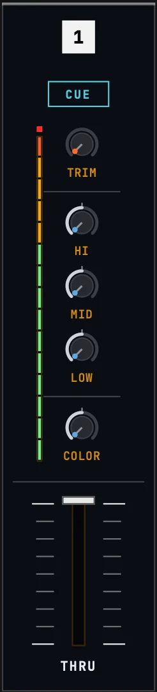
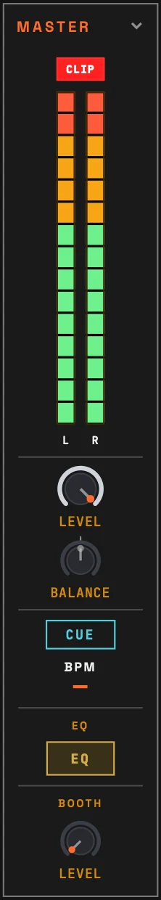
8.1 ヘッドホンとエフェクト
- LEVEL, MIX — ヘッドホン LEVEL ノブ位置と, CUE チャンネルとマスター音のバランス (MIX) です。
- CUE — マスター音をヘッドホンで聴くときに点きます。
- 折りたたみ — セクション名を押すと折りたたみ, 展開します。
- PARAMETER — SOUND COLOR FX の PARAMETER ノブ位置です。
- SOUND COLOR FX エフェクト — 選んだエフェクトです。オフなら OFF です。
- BEAT FX エフェクト — 選んだエフェクトです。
- CH SELECT — BEAT FX をかけるチャンネルです。
- FX FREQUENCY — BEAT FX をかける帯域 (LOW, MID, HI) です。
- LEVEL/DEPTH — BEAT FX の LEVEL/DEPTH ノブ位置です。
- ON — BEAT FX がオンのときに点きます。
ヘッドホン出力が 2 つある DJM では B ヘッドホンの LEVEL, MIX と LINK CUE も出ます。LINK CUE は rekordbox LINK MONITOR の音を聴くときに点きます。
FILTER セクションがある DJM では選んだフィルター (LPF, HPF) と RESONANCE ノブ位置も出ます。
8.2 チャンネル
- ON AIR — このチャンネルがオンエアのときに点きます。
- CUE, A, B — このチャンネルのヘッドホン CUE 状態です。ヘッドホンが 2 つのモデルでは A と B が別に出ます。
- TRIM — TRIM ノブ位置です。
- EQ — HI, HI MID, LOW MID, LOW ノブ位置です。帯域数はモデルによります。
- COLOR — SOUND COLOR FX ノブ位置です。
- レベルインジケーター — チャンネルレベルです。一番上の CLIP は入力が振り切れると点きます。
- チャンネルフェーダー — チャンネルフェーダー位置です。
- クロスフェーダー割り当て — A, THRU, B のうちこのチャンネルの割り当てです。
8.3 MASTER
- マスターレベルインジケーター — L, R のマスターレベルです。CLIP は出力が振り切れると点きます。
- LEVEL — MASTER LEVEL ノブ位置です。
- BALANCE — MASTER BALANCE ノブ位置です。C は中央です。
- CUE — マスター音をヘッドホンで聴くときに点きます。
- BPM — 再生中の CDJ の BPM です。複数が再生中なら番号が最も若いデッキの BPM です。
- EQ, ISO — マスター EQ の状態です。MASTER ISOLATOR がオンだと ISO に変わります。
- BOOTH LEVEL — BOOTH LEVEL ノブ位置です。
9HISTORY
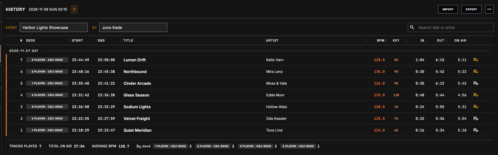
オンエアになった曲を実際の時刻とデッキ番号で記録します。ミキサーがあれば再生中かつオンエアの時間を, なければ再生中の時間を数え, 10 秒以上で記録します。再生またはオンエアが 3 秒以上途切れて再開すると同じ曲でも新しい行になり, 3 秒以内に戻れば 1 行に続きます。バーチャルデッキは曲を載せた時点で記録し, 再生した時間を数えます。今流れている曲は END の欄に LIVE と出ます。
記録は ORVIK を起動するたびに新しく始まります。記録は自動保存され, ORVIK が異常終了した場合は次回起動時に続きを使うか尋ねます。
- 開始時刻 — この記録を始めた日付と時刻です。
- 曲数 — 記録された曲数です。
- IMPORT — ヒストリーファイル (ORVIK CSV, ShowKontrol ヒストリー CSV, TXT) を読み込んで今の記録に合わせます。ファイルの記録はそのまま追加します。
- EXPORT — 形式を選んで保存します。ORVIK CSV (ORVIK に再読み込み可), ShowKontrol ヒストリー, ShowKontrol セットリスト, トラックリスト TXT から選びます。
- ⋯ — 自動保存の履歴… で記録の以前のコピーを戻します (自動保存)。履歴をすべて消去… は確認してから記録を消します。
- EVENT — イベント名です。書き出すファイル名 (ORVIK CSV, セットリスト, トラックリスト) とトラックリスト TXT の本文に入ります。
- DJ — DJ 名です。トラックリスト TXT の本文に入ります。
- 検索 — 曲名またはアーティストで探します。
- 表の見出し — 境界をドラッグして列幅を変え, ダブルクリックで元に戻ります。列は次のとおりです。
- DECK — 曲が流れたプレーヤー番号と機種です。
- START, END — オンエアが始まった時刻と終わった時刻です。
- IN, OUT — オンエア開始時と終了時の再生位置です。
- ON AIR — オンエアだった時間です。
- 合計 — 再生曲数, 総 ON AIR 時間, 平均 BPM, デッキごとの曲数です。
行の右端のボタンで曲をセットリストに追加します。リストに入るとボタンがオレンジ色になりチェックが付きます (もう一度押すとさらに 1 つ追加します)。行にマウスを乗せると隣に × が出て, 押すとその行を削除します。どちらも左クリックで動きます。今流れている曲を削除すると, その曲が再生されている間は再記録しません。タッチスクリーンでは指で一覧をドラッグしてスクロールします。
自動保存の履歴
ORVIK はヒストリー, セットリスト, キュー, OUTPUT のノードのコピーを残します。変更の 5 分後, 消去や読み込み, ファイルを開く前, ORVIK の終了時にそれぞれ 1 つ作ります。各ページの ⋯ > 自動保存の履歴… で新しい順に一覧が出て, 時刻, 理由, 中身 (曲, キュー, 行, ノード) が見えます。復元 は選んだコピーを戻します。今の状態を先にコピーするので, 後で戻れます。フォルダを開く はファイルマネージャーでコピーを見せます。
10SET LIST
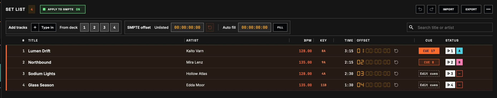
曲ごとにタイムコードオフセットとキューを決めておくリストです。APPLY TO SMPTE をオンにしておくと, リストの曲がデッキに載ったとき, そのデッキが接続された SMPTE レイヤー (A, B) に曲のオフセットが入ります。セットリストもヒストリーと同様に起動のたびに空になります。自動保存され, 自動保存のコピーが残ります。
- 曲数 — リストの曲数です。
- APPLY TO SMPTE — オンにすると, リストにある曲がデッキに載ったとき, そのオフセットをそのデッキのレイヤーに入れます。再生中のデッキもすぐに変わります。オフならレイヤーのオフセットは今の値のままです。
- 元に戻す, やり直す — リストの変更を元に戻し, やり直します。Ctrl+Z (Mac は Cmd+Z), Ctrl+Shift+Z または Ctrl+Y (Mac は Cmd+Shift+Z) です。
- IMPORT — セットリストを読み込みます。ORVIK ファイル (.json), ShowKontrol セットリスト (.set), ヒストリー (.csv), rekordbox から書き出したテキストプレイリスト (.txt), オーディオファイルを開けます。リストがあれば 置き換え か 追加 かを尋ね, テキストファイルの列名を判別できなければ使う列を選ばせます。ORVIK ファイルにはキューも入っています。
- EXPORT — ORVIK セットリスト (リスト外の曲のオフセットとキューを含む) か ShowKontrol セットリスト (.set: タイトル, アーティスト, オフセット, 長さ) で保存します。
- ⋯ — 再生済みの印を消す で再生済みの印を消します。自動保存の履歴… でリストの以前のコピーを戻します。リストをすべて消去… は確認してからすべての曲を削除します (元に戻すで復元できます)。曲のキューも一緒に消えます。
- 曲を追加 — 手入力 は入力した曲を追加します。タイトル, アーティスト, オフセットの順で, Enter で次の欄へ進みます。デッキから の横のデッキ番号を押すと, そのデッキに載った曲を追加します。
- リスト外 — リストにない曲に使うオフセットです。隣のボタンで 00:00:00:00 に戻します。23:00:00:00 のようにキューのない区間にしておきます。
- 自動入力 — 開始時刻を入れて FILL を押すと, リスト順に 1 時間ずつ空けて全曲にオフセットを入れます。オフセットはそれぞれ後から編集できます。
- 検索 — 曲名またはアーティストで探します。
- OFFSET — この曲のオフセットです。押すと編集し (HH:MM:SS:FF, 24 時間未満), 隣のボタンで 00:00:00:00 に戻します。
- キュー — 曲のキュー数です。キューがなければ キュー編集 と出ます。押すか曲をダブルクリックすると, リストの下にキューエディターが開きます。10.1
- STATUS — 曲がデッキにある間は ▶ とデッキ番号, 続いてオフセットが入ったレイヤー (A, B) が出ます。そのデッキがどのレイヤーにもつながっていなければダッシュです。APPLY TO SMPTE がオンの間に曲が再生されオンエアになると, チェックが付き行が薄くなります。ミキサーがなければ再生だけを見ます。同じ曲がリストに複数あれば, まだチェックのない行のオフセットを使い, 1 つだけなら再度かけてもその行のオフセットを使います。
- デッキにある曲 — 今デッキに載っている曲の行には左にバーが付きます。
曲名, アーティスト, オフセットは押すと編集できます。行のハンドルをドラッグすると順番が変わり, 行の右端のゴミ箱で曲を削除します。表の見出しの境界をドラッグすると列幅が変わり, ダブルクリックで元に戻ります。タッチスクリーンでは指で一覧をドラッグしてスクロールします。
10.1 キュー編集
キューエディターは SET LIST ページのリストの下に開き, ウィンドウの横に曲のキュー一覧が出ます。曲を選ぶとその曲の波形とキューが出ます。
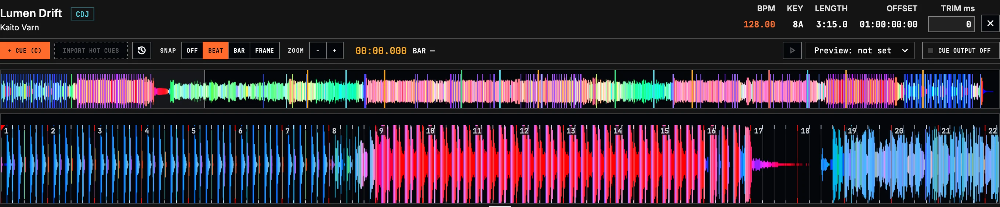
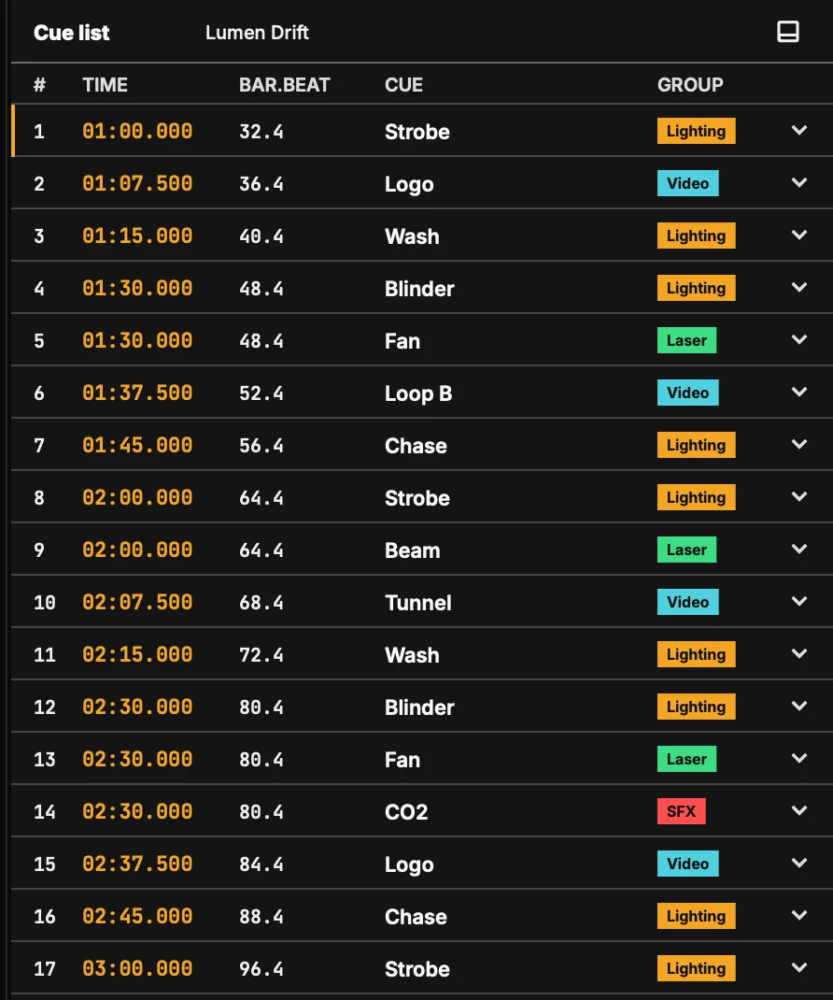
- 波形 — 曲全体の波形と拡大波形です。ビートグリッド, 小節番号, フレーズ帯, キュー表示が描かれます。波形はオーディオファイル, HISTORY の記録, CDJ から受け取った波形のうちあるものを使います。CDJ の波形を使うにはトラックライブラリをオンにします (エディターの案内からオンにできます)。波形がなくても時間だけでキューを入れられます。
- 位置の移動 — 波形を押すと編集位置が移ります。スナップ (オフ, 拍, 小節, フレーム) で位置をグリッドに合わせます。ズーム で拡大波形の範囲を変えます。
- + キュー (C) — 編集位置にキューを作ります。オーディオがあればその位置をプレビューします。
- ホットキューを取り込む — rekordbox のホットキューとメモリーポイントをキュー位置として取り込みます。
- キュー一覧 — 時間, 小節.拍, 名前, グループ, 動作の要約です。
- キュー設定 — 選んだキューの名前, 時間, 小節.拍, グループ, 事前アナウンス (既定に従うか拍数), 音声 (グループに従う, オン, オフ), 読み上げ内容 (空なら名前を読む), 動作一覧です。
- 動作一覧 — 上から順に実行します。OSC (送り先, アドレス, 型 i/f/s, 値), Art-Net DMX (ユニバース, チャンネル=値を複数), MIDI (機器, チャンネル, Note on/off, CC, Program), 待機 (ms または拍, 小節) を置けます。送り先の一覧は OUTPUT ページと同じです。
- グループ — キューの担当グループです。既定のグループは照明, 映像, 特効, レーザーで, グループメニューの グループを編集… で名前と色を変えたり追加したりします。グループはキューコールウィンドウの表示と音声出力に使われます。
- キュー出力 — エディター上のスイッチでキュー動作の送出をオン/オフします。
キューはマスターデッキで再生中の曲にだけ反応します。マスターデッキの曲がセットリストになければキューは送りません。キューは曲のビートグリッドと再生位置から拍を計算してその拍に送ります。キューはセットリストの項目に付くため, 同じ曲でもセットリストごとに別のキューです。
11CUE CALL
キューコールは, あるデッキの曲に付いたセットリストのキューを担当グループごとに示し, 次のキューまでの残り時間を数えます。ヘッダーの CUE CALL を押すと, メインウィンドウの右にドッキングしたキューコールが開きます。もう一度 CUE CALL を押すと, すべてのキューコールを閉じます。Alt+クリック (Mac は Option+クリック) で別のキューコールを独立したウィンドウで開きます (例: 照明担当, 特効担当)。それぞれ位置, 大きさ, 表示設定を記憶し, ORVIK の終了時に開いていたものは次の起動時に戻ります。
開き方とドッキング
- ドッキング — キューコールのヘッダーでスピーカーの左にあるボタンは, 表示をメインウィンドウの右にドッキングし, また独立したウィンドウに戻します。ヘッダーをダブルクリックしても同じです。
- ドラッグ — ヘッダー (またはウィンドウのタイトルバー) をドラッグしてキューコールウィンドウを動かします。メインウィンドウの右端にドロップするとそこにドッキングします。右側には最大 2 つのパネルが上下に並び, 境界をドラッグすると幅が変わります。
- ウインドウメニュー — macOS ではキューコールウィンドウがそれぞれ「ウインドウ」メニューと Dock のメニューに出ます。「ウインドウ」>「閉じる」(⌘W) で前面のキューコールウィンドウを閉じます。
ウィンドウのタイトルには表示するグループが出ます。「キューコール (全体)」またはグループ名です。
追従するデッキ
設定ポップアップの 追従するデッキ で, すべてのキューコールウィンドウと音声アナウンスが従うデッキを選びます。
- SMPTE マスター — SMPTE OUT の MASTER レイヤーの元になるデッキです。MASTER ← A または B, そのレイヤーのデッキの順にたどります (既定)。MASTER が CLOCK か FREEWHEEL のときは CDJ のテンポマスターです。
- テンポマスター — CDJ マスターです。
- ON AIR のデッキ (自動) — 今流れているデッキです。FLOW レイアウトがメインのデッキを選ぶのと同じく, 再生, フェーダー, 残り時間から選びます。DJ が MASTER を押す前に移ることがあります。
該当するデッキがなければ「マスターデッキなし」, その曲がセットリストになければ「セットリストにない曲」, 曲にキューがなければ「この曲にはキューがありません。」と出ます。
ヘッダー
- タイムコード — SMPTE OUT の MASTER タイムコードです。
- 拍のマス — 4 つのマスです。小節の中で今の拍が点き, 1 拍目はオレンジ色です。
- BPM — 追従するデッキの BPM です。
- 曲名, アーティスト — 追従する曲です。レイヤーバーやレーンにまだ出ていないときに表示します。
- ボード, レイヤー — テーマを切り替えます。幅 600 px 未満のウィンドウでは代わりに設定ポップアップにあります。
- ドッキング, スピーカー, 歯車 — ドッキングと切り離し, 音声アナウンスのオン/オフ, 設定ポップアップです。
テーマ
- ボード — 上のレイヤーバーにレイヤー A, B のデッキ番号, 曲名, 再生時間が出ます。M は MASTER が従うレイヤーの印で, もう一方のレイヤーのデッキには「次の曲」と付きます。その下はグループごとにタイル 1 つで, グループ名, 次のキュー名, 大きなカウントダウン, 小節.拍, 進行バーと, 右下にそのグループの後続のキューが出ます。キューが近づくとタイルがグループ色で満ち, キューの瞬間に GO が出ます。今の曲にキューのないグループは短いカードになり, キューのあるグループが残りの場所を分け合います。下の帯には次の曲 (もう一方のレイヤーのデッキ) と最初のキューが, その曲の位置からの時間で出ます。
- レイヤー — 3 本のレーンとカウントダウンの一覧です。MASTER レーンには追従するデッキの波形が左へ流れ, 表示するグループのキューマークと名前が付きます。NOW の線は幅の 20 % の位置で, キューは NOW に触れた瞬間に到達します。A, B レーンにはそれぞれの SMPTE レイヤーのデッキが出ます。もう一方のレイヤーのデッキは次の曲で, そのキューも出ます。デッキのループはディテール波形と同じようにレーンに出て, ループが設定されていてオフの間は薄く出ます。ビートグリッドは設定の ビートグリッド: 詳細 に従います。下の一覧には来るキューごとに 1 行あり, レイヤー, 名前, 残り時間, 小節.拍, 最後の 1 分で縮むバーが出ます。
レイヤーテーマでは MASTER レーン右下の − で曲を広く, + で狭く表示し, RST で自動の範囲に戻します。レーンの上でマウスホイールやピンチを使ってもズームします。
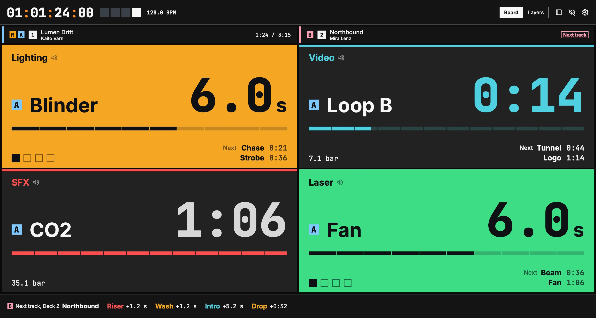
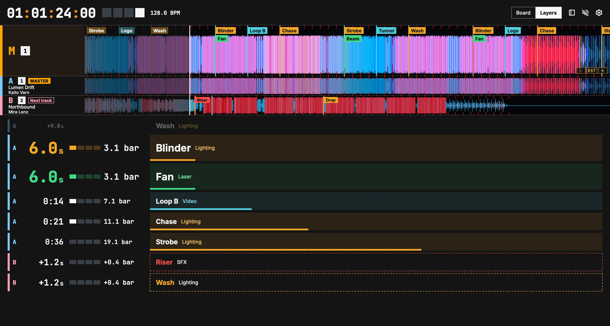
残り時間
秒と拍を一緒に示します。10 秒未満の秒は 0.1 秒単位 (4.3 s), 10 秒以上は分:秒 (0:24) です。小節.拍は CDJ と同じく数え下げます。2.3 bar は 2 小節 3 拍残っている意味で, 小節の中の拍は 4 3 2 1 と進みます。
大きなカウントダウン (最後の 5, 10, 15, 30 秒のいずれか, 設定ポップアップで選択) では, 小節.拍の代わりに 4 つの拍のマスが出ます。最後の拍は 3 2 1 (または 5, 10 から) と数えて GO が出て, カウントのたびにタイルや行が一瞬点きます。長いキューが進行中のときは, その名前と終わりまでの時間が出ます。
設定ポップアップ (歯車)
| 区画 | 項目 |
|---|---|
| 表示 | 画面 (ボード, レイヤー), 大きなカウントダウンの開始 (5, 10, 15, 30 秒), 小節.拍と拍のマスを表示, 拍カウントの開始 (3, 5, 10), 表示するグループ, レーンの波形の色 (曲の色 (CDJ), グレー, オフ), 追従するデッキ (SMPTE マスター, テンポマスター, ON AIR のデッキ (自動)) |
| Web表示 | スマートフォン, タブレットで開くアドレスと アドレスをコピー, ブラウザで開く。設定のウェブビューアーがオンである必要があります。 |
| 音声コール | 話し方 (名前+カウント, 名前のみ, カウントのみ), 予告 (8拍前, 4拍前), カウント (3拍, なし), 最後の言葉 (GO, なし), 声, 出力 (デバイス, チャンネル, 音量, 試聴), クリック (なし, カウント中, 常に) とクリック音量, グループごとのスピーカー |
表示設定はウィンドウごと, 追従するデッキと音声コールはすべてのウィンドウで共通です。音量は最大 200 % です。
音声アナウンス
キューコールのヘッダーのスピーカーで音声アナウンスをオン/オフします。システムの声 (macOS, Windows) で文を先に作っておき, 本番中は拍に合わせて再生します。アナウンスは 追従するデッキ で選んだデッキに従います。
- キューの 8 拍 (または 4 拍) 前に「グループ, キュー名, スタンバイ」, 最後の 3 拍で「さん, に, いち」, キューの瞬間に「ゴー」と言います。話し方, カウント, 最後の言葉 で一部を省けます。
- 声 の一覧はアプリが話せる言語 (韓国語, 英語, 日本語, スペイン語, ドイツ語, フランス語, 中国語) の声だけを言語ごとにまとめて表示します。先頭の「システム○○の声」は表示言語の既定の声です。他の言語の声を選ぶとアナウンスもその言語になります (英語の声なら "Lighting, standby", "three, two, one, go")。セットリストで自分で付けたグループ名はそのまま読みます。
- その言語の声がなければ英語で話し, 一覧の先頭にその案内が出ます。声は OS の音声設定で追加できます。
- 出力 はすべてのアナウンスで共通の 1 つの機器とチャンネルです。LTC と同じオーディオ機器の別チャンネルを選べますが, LTC が使うチャンネルは選べません。そのチャンネルには「LTC使用中」と出ます。
- クリック はカウント中または常に, 拍ごとに鳴ります。4 拍ごとの 1 拍目は高い音です。
- グループ名の隣のスピーカーでそのグループだけ消します。開いているキューコールに表示されているグループを話し, キューコールが 1 つも開いていなければすべてのグループを話します。
ウェブページ
設定のウェブビューアーがオンなら, 同じネットワークのスマートフォン, タブレット, 他のコンピューターで http://<このコンピューターのアドレス>:<ポート>/cuecall を開きます。最初にアクセスコード (ウェブビューアーと同じコード) を尋ね, 12 時間記憶します。このコンピューターで ブラウザで開く を使うとコードは要りません。ページの歯車でボード, レイヤーのテーマ, グループ, 大きなカウントダウン, 拍カウント, 小節.拍を選び, その設定はそのブラウザーに残ります。ブラウザーが対応していれば, 画面を消さない で画面のスリープを止めます。スマートフォンの縦画面向けの配置があります。ORVIK が 3 秒応答しないとページが暗くなって「接続なし」と出て, 応答が戻るまでカウントダウンは止まります。
12NETWORK
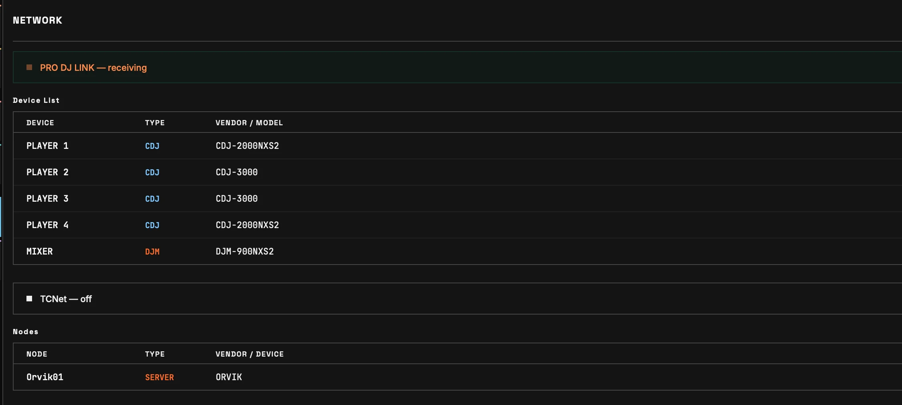
- PRO DJ LINK 状態 — PRO DJ LINK を受け取る準備ができているかを示します。CDJ が実際に見えているかは機器一覧で確認します。
- 機器一覧 — 確認された CDJ, DJM の番号, 種類, 機種, IP アドレスです。
- TCNet 状態 — TCNET スイッチのオン状態と ORVIK のノード名です。
- ノード一覧 — ORVIK 自身と, 直近 10 秒に確認された TCNet ノードです。
- TYPE — ノードの役割です。SERVER は送る側, CLIENT は受ける側で, REPEATER, AUTO もあります。TCNet がオンで CLIENT が 1 つもなければ一覧の下に案内が出ます。
12.1 接続構成の警告
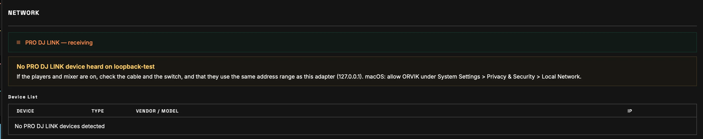
PRO DJ LINK がオンの間, ORVIK はこのコンピューターのつながり方を確認します。接続構成のためにプレーヤーやミキサーが届かないときは, NETWORK の上部に原因と対処を書いた警告が出ます。ステータスバーには LINK と出て, PRO DJ LINK スイッチにマウスを乗せても内容が出ます。赤はリンクがまったく使えない状態, 黄色は助言です。警告は PRO DJ LINK を始めてから 10 秒後に出始め, 助言するだけです。ORVIK はネットワークの設定を何も変えません。
| 警告 | 状況 | 対処 |
|---|---|---|
| PRO DJ LINK のポートを別のプログラムが使用中です | 別のプログラムが PRO DJ LINK のポート (50000〜50002) を使っています。ORVIK が判別できればプログラム名が出ます | そのプログラムを終了してから, PRO DJ LINK をオフにして再びオンにします。よくある原因は rekordbox, 別の ORVIK, AnyDesk, 通話中の Microsoft Teams, Beat Link Trigger などの PRO DJ LINK ツールです。 |
| 別のネットワークにある機器 | プレーヤーやミキサーはこのケーブルで送っていますが, アドレスがこのアダプターのネットワークの外にあります (例: 自己割り当ての 169.254.x.x の機器と, ルーターのアドレスを持つアダプター) | アダプターのアドレスを自動取得 (DHCP) にするか, 機器と同じ範囲のアドレスを設定するか, すべてを同じルーターにつなぎます。 |
| PRO DJ LINK 機器が見つかりません | 選んだアダプターに何も届いていない (Windows の自動検出ではどのアダプターにも届いていない), またはリンクが 15 秒途絶えています | プレーヤーとミキサーの電源, ケーブルとスイッチ, アドレス範囲を確認します。macOS: 「システム設定 > プライバシーとセキュリティ > ローカルネットワーク」で ORVIK を許可します。Windows: ルーターのないアダプターはパブリックネットワークとみなされるため, パブリックネットワークでも ORVIK を許可します。他の有効なアダプターが一覧で出るので, 設定で正しいものを選べます。 |
| 2 つのアダプターが同じネットワークにあります | このコンピューターの 2 つのアダプターが同じネットワークにあるため, 曲データや波形の要求が違うアダプターから出ることがあります | もう一方のアダプターをオフにするか外すか, 別のネットワークに移します。 |
13OUTPUT
デッキ, ミキサーの値を OSC, DMX (Art-Net, sACN), MIDI で他のプログラムや機器へ送ります。以前の OSC ページと ART-NET DMX パッチを 1 つにしたノードエディターです。1.6 で使っていた OSC の行と DMX パッチは初回起動時にノードへ移され, 送る値は同じです。
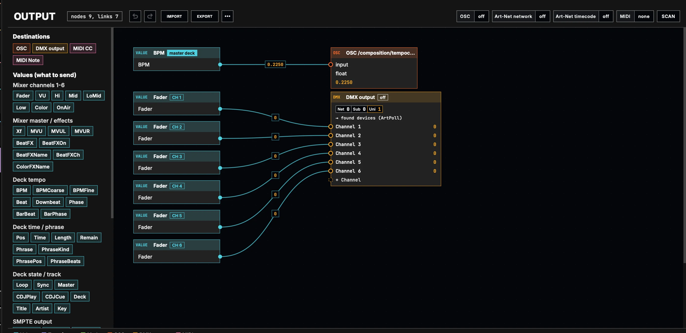
ページ上部
- 元に戻す, やり直す — ページの変更を元に戻し, やり直します。Ctrl+Z (Mac は Cmd+Z), Ctrl+Shift+Z または Ctrl+Y (Mac は Cmd+Shift+Z) です。
- IMPORT, EXPORT — EXPORT はページ全体 (ノード, DMX 出力, OSC の行, ネットワーク設定) をファイルに保存し, IMPORT はそれを読み込みます。読み込みは 1 回の元に戻すで取り消せます。ファイルが送出をオンにする場合, ORVIK は送り先を一覧にして先に確認します。
- ⋯ — 自動保存の履歴… でノードの以前のコピーを戻します。自動保存
- OSC — OSC の送り先 (アドレス:ポート) またはオフを示します。押すと OSC 出力を設定します。オン/オフ, このコンピュータ, ブロードキャスト, IPアドレス の選択, IP とポート (既定 7000) です。他のOSC送信先（キュー動作） には, キューエディターの OSC 動作に使う名前付きのアドレスを入れます。+ で追加し, × で削除します。
- Art-Netネットワーク — インターフェースと DMX の送出頻度, またはオフを示します。押すとすべての DMX 出力で共通の設定が出ます。Art-Netオン（タイムコード、DMX共通）, DMX のインターフェース (タイムコードのインターフェースに合わせることもできます), DMX ポート (6454), DMX の送出頻度 (10〜60 Hz, 既定 40), 使用中のブロードキャストアドレス, ArtSync, ArtPollReply です。OSC 出力のポートは Art-Net に使えません。
- Art-Netタイムコード — フレームレート, またはオフを示します。押すと タイムコードを送る, 送るレイヤーと今出ているタイムコード, タイムコードのインターフェース, 送り先 (ブロードキャストまたは 1 つの IP アドレス), タイムコードのポートが出ます。Art-Netネットワーク で Art-Net をオンにしておく必要があります。フレームレートは設定の SMPTEタイムコード出力にある フレームレート です。レイヤーごとのオンは SMPTE OUT の ART ボタンです。
- MIDI — MIDI CC, MIDI Note ノードの MIDI 出力です。押して機器を選びます。設定の MIDI Clock 出力にある MIDI 出力ポート と同じポートです。
- SCAN — Art-Net 機器 (ArtPoll), OSC プログラム (mDNS), MIDI 出力を探して一覧にします。Art-Net 機器の隣の + はその IP を最初の DMX 出力の受信先に加え, OSC プログラムの隣の + はそのプログラムを他の OSC 送信先に加えます。
左の一覧
押すと中央のキャンバスにノードができます。一覧にマウスを乗せると短い使い方が出ます。
| グループ | ノード |
|---|---|
| 送信先 | OSC, DMX出力, MIDI CC, MIDI Note |
| 値: ミキサー チャンネル1〜6 | Fader, VU, Hi, Mid, LoMid, Low, Color, OnAir |
| 値: ミキサー 全体 / エフェクト | Xf, MVU, MVUL, MVUR, BeatFX, BeatFXOn, BeatFXName, BeatFXCh, ColorFXName |
| 値: デッキ テンポ | BPM, BPMCoarse, BPMFine, Beat, Downbeat, Phase, BarBeat, BarPhase |
| 値: デッキ 時間 / フレーズ | Pos, Time, Length, Remain, Phrase, PhraseKind, PhrasePos, PhraseBeats |
| 値: デッキ 状態 / トラック | Loop, Sync, Master, CDJPlay, CDJCue, Deck, Title, Artist, Key |
| 値: SMPTE出力 | SMPTEA, SMPTEB, SMPTEM, Clock |
| 変換 | 範囲, 波形 (sin, tri, saw, sq), 反転, フリーラン, 時間形式 |
| 数学 | 足す, 引く, 掛ける, 割る, 最小, 最大 |
| 特殊 | 範囲制限, しきい値, なめらか, 改行 |
| 入力 | 整数, 小数, テキスト |
中央のキャンバスと右の設定
ノードの出力の点から別のノードの入力の点へドラッグしてつなぎます。ノードの上に落とした線は一番近い入力につながります。線の上に今流れている値が見えます。1 つの値を複数の場所へ送れます。線のない変換, 演算ノードを線の上に落とすと, その線の間に入ります。文字の値 (曲名, アーティスト, キー) は OSC にだけ送れます。DMX や MIDI へつなごうとすると拒否され, 理由が出ます。
- 選択 — ノードを押して選びます。空いたキャンバスをドラッグすると複数を選べ, Shift+クリックまたは Ctrl+クリック (Mac は Cmd+クリック) で 1 つずつ加えたり外したりします。Delete で選んだノードを削除します。
- 右クリックメニュー — 切り取り, コピー, 貼り付け, 複製, 削除, 接続線を外す, すべて選択, グループにする, グループ解除。Ctrl+G (Mac は Cmd+G) で選んだノードをグループにし, Shift も押すと解除します。グループは名前の帯をドラッグして動かし, 帯をダブルクリックすると名前を変えます。
- 移動 — ノードは他のノードの端と中心に吸着します。Alt を押しながらなら自由に置けます。Space を押しながらドラッグすると表示を動かします。タッチスクリーンでは空いたキャンバスを指でドラッグして表示を動かし, 指をしばらく止めてからドラッグするとノードを選びます。
- 問題 — 送れないノードは理由を示します。「未接続」,「この接続では送れません」,「チャンネル重複」,「上限超過」,「線がループ」,「別のDMX出力が使用中のユニバース」のいずれかです。
ノードを選ぶと右に設定が出ます。
- 値ノード — 値とデッキです。デッキはマスターデッキまたはデッキ 1〜6 です。Beat と Phase は 1 拍に 1, 2, 4, 8, 16 回, Downbeat, BarBeat, BarPhase は 1 小節に複数回 (波形と組み合わせて) 動かせます。
- OSC — アドレスと型です。文字の値は string, 数は float か int, 文字の形もある数 (Time, Length, BPM など) は float, int, string のいずれかで送ります。値が変わったときだけ送り, 最大 60Hz です。先頭の
/がなければ付け, 空白と# * , ? [ ] { }は使えません。 - DMX出力 — このユニバースを送る で出力をオンにします。Art-Netアドレス は Net (0〜127), Subnet (0〜15), Universe (0〜15) で, DMX 出力ごとに別のユニバースが必要です。受信機器のIP にはアドレスをカンマか空白で区切って入れます。空なら, 最初の DMX 出力は ArtPoll で見つかった機器へ, 他の DMX 出力は Art-Net ネットワークのブロードキャストアドレスへ送ります。最初の DMX 出力は sACN でも送れます (sACNでも送る)。ユニバース, 優先度などの sACN の設定は設定の sACN 出力 にあります。値を + チャンネル につなぐと次のチャンネルが割り当てられ, ノードのチャンネル番号を押すと変えられます。0〜1 の値を 0〜255 で送ります。
- MIDI CC, MIDI Note — MIDI チャンネル (1〜16) と CC 番号またはノート番号 (0〜127) です。0〜1 の値を 0〜127 で送ります。
- 範囲 — 0〜1 の値を 開始〜終了 に変えます。開始 を 終了 より大きくすると逆向きに動きます。BPM は 20〜500 BPM を 0〜1 とみなします。
- 波形 — 0〜1 の値を sin, tri, saw, sq の波形に変えます。反転のスイッチもあります。反転 は 1−値です。
- フリーラン — 拍の値 (Beat, Downbeat, Phase, BarBeat, BarPhase) を, CDJ の拍の報告の合間も報告がないときも, デッキのテンポで単独で進めます。
- 時間形式 — 時間の値 (Time, Length, Remain, SMPTE, Clock) の桁 (hh, mm, ss, ff) を選びます。下の「時間形式」を参照。
- 足す, 引く, 掛ける, 割る, 最小, 最大 — つないだ数だけ入力を取ります。入力が 1 つなら 2 つ目の値 を使います。フェーダーやレベルは 0〜1, BPM や数はそのままの数として扱います。足す は文字もつなぎます: "A" + "B" = "AB"。
- 範囲制限 — 値を 下限 と 上限 の間に収めます。しきい値 はその値以上で 1, それ以外は 0 を送ります。
- なめらか — 値の動きを遅くします。アタック (ms) は上がるときに追う速さ, サステイン (ms) は入力が下がったあとピークを保つ時間, リリース (ms) はその後下がる速さです。大きいほど遅く, 0 ならすぐに従います。この 3 つの設定より前に保存したなめらかノードは, 上りと下りで共通の 1 つの時間を保ちます。
- 改行 — 文字の値を複数行でつなぎます (例: 曲名 / アーティスト)。
- 整数, 小数, テキスト — 入力した値です。テキストは OSC にだけ送れます。
計算は出力エンジンで行うため, 他のページを見ていても送り続けます。
値の名前と送る値
範囲を指定しないときに送る値です。
| グループ | 名前 | 値 |
|---|---|---|
| ミキサーチャンネルごと (チャンネル 1〜6) | Fader, VU, Hi, Mid, LoMid, Low, Color | 0〜1 |
| OnAir | オンエアなら 1, それ以外 0 | |
| ミキサー全体 | Xf, MVU, MVUL, MVUR, BeatFX | 0〜1 |
| BeatFXOn | ビート FX が ON なら 1 | |
| BeatFXName, BeatFXCh, ColorFXName | 選んだビート FX 名, ビート FX をかけたチャンネル, カラー FX 名 (string) | |
| デッキごととマスターデッキ | BPM | BPM そのまま (string なら 128.0 のように小数第 1 位)。BPMCoarse は整数部, BPMFine は小数部 |
| Pos | 曲の進行 0〜1 (string なら 42%) | |
| Beat, Downbeat | 拍ごとに短く 1, 小節の最初の拍だけ短く 1 | |
| Phase | 拍の中の位置 0〜1 | |
| BarBeat | 小節の中で何拍目か 1〜4 | |
| BarPhase | 小節の中の位置 0〜1 (4 拍で 1 周) | |
| Phrase | rekordbox のフレーズ名 (string, 例: CHORUS) | |
| PhraseKind | フレーズ番号: Intro 1, Verse 2, Bridge 3, Chorus 4, Up 5, Down 6, Outro 7 (フレーズがなければ 0) | |
| PhrasePos, PhraseBeats | フレーズ内の位置 0〜1, 次のフレーズまでの拍数 | |
| Loop, Sync | ループ中なら 1, シンクがオンなら 1 | |
| Title, Artist, Key | 曲名, アーティスト, キー (string) | |
| Time, Length, Remain | 現在時間, 全体時間, 残り時間 (string, MM:SS, 残りは -MM:SS) | |
| デッキごとのみ | CDJPlay, CDJCue | 再生中なら 1, CUE を押している間 1 |
| Master | そのデッキが CDJ マスターなら 1 | |
| マスターデッキのみ | Deck | マスターデッキのプレーヤー番号 1〜6 |
| SMPTE, 時計 | SMPTEA, SMPTEB, SMPTEM | SMPTE OUT の A, B, MASTER レイヤーのタイムコード, ドックに見える値 (string, HH:MM:SS:FF, 29.97 ドロップフレームは HH:MM:SS;FF, オフセット込み) |
| Clock | コンピューターの時刻 (string, HH:MM:SS) |
- マスターデッキはヘッダーの MASTER BPM と同じデッキです。CDJ マスターがなければ再生中のデッキを使い, オンエアのデッキが優先です。
- Resolume のテンポアドレス (
/composition/tempocontroller/tempo) へ送る BPM は 0〜1 (20〜500 BPM) で送ります。Resolume がこのアドレスで 0〜1 の値を受けるためです。 - ミキサーがなければミキサーの値は送りません。0 を送るとフェーダーに結び付けたレイヤーが消えるためです。BPM のないデッキの BPM も送りません。
- オン/オフの値 (OnAir, BeatFXOn, Loop, Sync, CDJPlay, CDJCue, Master) と Deck は string でも送れます (
ON,OFF,2)。
時間形式
時間の値に時間形式ノードを付けると選んだ桁だけ送ります。
| 文字 | 桁 |
|---|---|
hh, h | 時 |
mm, m | 分 |
ss, s | 秒 |
ff, f | フレーム (SMPTE のみ) |
2 文字なら先頭に 0 を付けて 2 桁で送り, 1 文字ならそのまま送ります。複数の桁を続けて書くと : でつないで送ります (例: mmss → 05:08, hmmss → 0:05:08)。曲の時間は h を使わなければ分が 60 を超えてもそのまま数えます。Remain に形式を付けると - なしで送ります。29.97 ドロップフレームのタイムコードはフレームの前を ; で送ります。
14SHORTCUT と MAP
キーボード, MIDI, OSC, DMX (Art-Net) で ORVIK のボタンを押し, 値を変えます。対象はレイヤー A, B, MASTER の SMPTE OUT の操作と, ヘッダーの PRO DJ LINK, TCNET, M.VOL です。受ける側だけ設定すればよく, 割り当てた操作のオン/オフは MIDI 機器へ返せます。
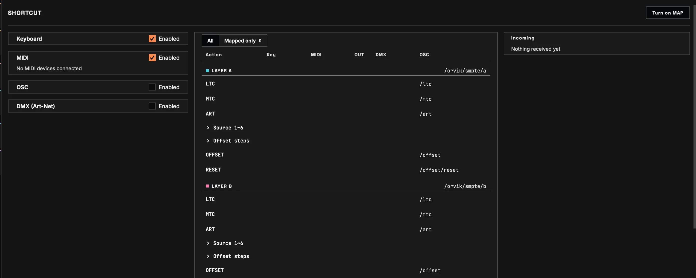
SHORTCUT ページ
入力は左にあり, それぞれに 有効 スイッチがあります。
| 区画 | 内容 |
|---|---|
| キーボード | ORVIK のウィンドウが前面にあるときだけ聞くキーの組み合わせです。既定はオンです。 |
| MIDI | 接続中のすべての MIDI 機器に IN (その機器を聞く) と OUT (割り当てた操作の状態をその機器へ返す, コントローラーの LED 用) があります。既定はオンです。 |
| OSC | OSC 受信ポート (既定 7700), 受ける場所 (すべてのインターフェース, このコンピューターのみ, 1 つのインターフェース), 送信を許可する IP です。一覧を空にすると同じネットワークの誰でも操作できるので, 会場では IP を書いておきます。既定はオフです。 |
| DMX (Art-Net) | 照明卓が送る 1 つの Art-Net ユニバース (Net / Subnet / Universe) のチャンネルで操作します。許可する IP は OSC と共通です。このコンピューターの Resolume と一緒に受けるには, 卓からブロードキャストで送ります。既定はオフです。 |
ページ右上の MAPをオン を押すと DECKS へ移り, MAP がオンになります。
表にはすべての動作が LAYER A, LAYER B, MASTER, ヘッダーに分かれて並びます。「ソース」と「オフセットステップ」の行は開くと中の動作が出て, 割り当て数が見えます。すべて はすべての動作を, 割り当て済みのみ は割り当てた動作だけを出します。
- キー, MIDI, DMX — 欄を押してからキーを押すか, MIDI, DMX を送ると割り当てます。その間, 欄には「入力待ち」と出ます。
- MIDI モード — 割り当てた MIDI の欄に付く札で, 押すと変わります。オン/オフの操作では, Toggle は押すたびに切り替わり, Piano は押している間だけオンです (127/0 を送る固定式のボタンにも使います)。値の操作では, Absolute はフェーダーやノブの位置をそのまま使い, Relative はエンドレスエンコーダー用で 1 ステップ 1 % です。
- OUT — オフとオンのときに返す MIDI の値です (既定 0 と 127)。APC mini mk2 ではカラーパレットと, 明るさまたは点滅の選択も出ます。
- OSC — その動作の固定の OSC アドレスです (例:
/orvik/smpte/a/ltc)。押すとコピーします。 - × — その行の割り当てを外します。
ウィンドウが広いと右のパネルに 受信した信号 (最後に受けた入力とその結果) と, OSC がオンの間は OSC受信ルール が出ます。オン/オフは 1 でオン, 0 でオフ, 値なしで切り替え, ボタンは値なしか 0 以外の値で押下 (0 は無視), 値は 0〜1 の float (0〜100 も可), ソースは値でも指定できます (/orvik/smpte/a/src 3)。
MAP
サイドバーの MAP (または SHORTCUT ページの MAPをオン) を押すと割り当てモードになり, もう一度 MAP を押すか Esc で抜けます。割り当てられる操作には枠が付きます。空いていれば破線, 割り当て済みなら実線とチップ (K キー, M MIDI, D DMX) です。1 つを押すと上のバーに名前と OSC アドレス (押すとコピー) が出ます。続けてキーを押すか, MIDI, DMX を送ると割り当てます。クリア は割り当てを外し, キャンセル は待つのをやめます。OSC アドレスは固定なので割り当ては要りません。
常に使えるキー
| キー | 動作 |
|---|---|
| Ctrl+R (Mac は Cmd+R) | 画面を読み込み直します。バーチャルデッキの再生は止まります。 |
| Ctrl+Z (Mac は Cmd+Z) | SET LIST と OUTPUT で元に戻します (テキスト欄の外) |
| Ctrl+Shift+Z または Ctrl+Y (Mac は Cmd+Shift+Z) | やり直します |
| Esc | MAP を抜けます |
| ⌘M (macOS) | ウインドウ > しまう |
| ⌘W (macOS) | ウインドウ > 閉じる: キューコールウィンドウを閉じます。メインウィンドウでは閉じるボタンと同じく ORVIK を終了します |
15設定
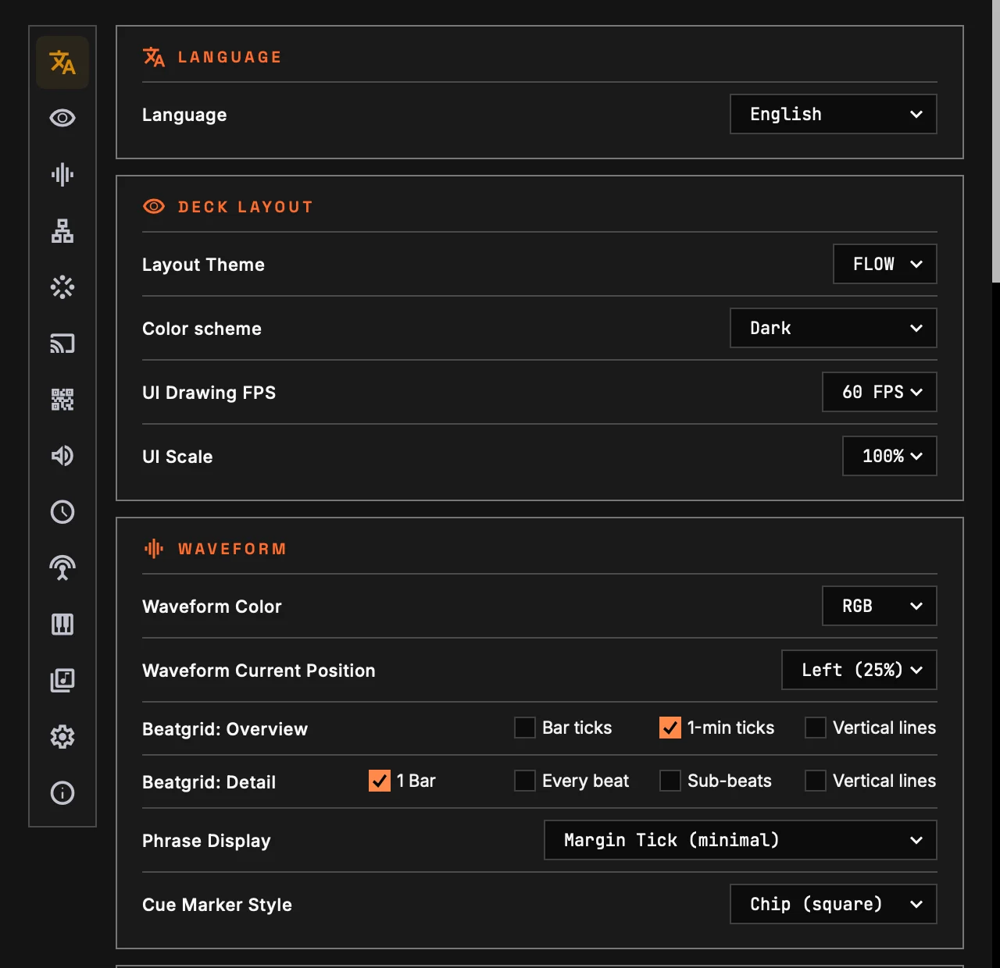
サイドバーの SETTINGS を押すと設定ウィンドウが別に開きます。もう一度押すとウィンドウを閉じます。
- 区画アイコン — 押すとその区画へ移動します。
- 区画 — 設定は下の区画に分かれます。
- 設定項目 — 左は項目名, 右は値です。行にマウスを乗せると説明が出ます。
ウィンドウを開くたびにオーディオ, LTC, MIDI の機器一覧を読み直します。インターフェースの一覧は開くたびに読み直します。
言語
| 項目 | 説明 |
|---|---|
| 言語 | 画面の言語です。システムの言語を選ぶとコンピューターの言語に従います。English, 한국어, 日本語, Español, Deutsch, Français, 繁體中文。 |
デッキレイアウト
| 項目 | 説明 |
|---|---|
| レイアウトテーマ | デッキ画面の配置です。FLOW, STK, STRIP, ROW から選びます。6.3 |
| カラースキーム | ダーク, または明るい場所向けのライト（屋外）です。 |
| UI描画FPS | 1 秒に画面を描き直す回数です (60, 30, 15)。下げると CPU の負荷が減ります。送出周期とは別です。 |
| UI表示倍率 | 画面全体の大きさです。100%, 125%, 150% から選びます。 |
波形
| 項目 | 説明 |
|---|---|
| 波形カラー | 3バンド, RGB, モノから選びます。3band データのない曲は RGB で出ます。 |
| 再生ヘッド位置 | ディテール波形で再生位置の線を置く位置です。中央 (Center) か左 (Left 25%) です。 |
| ビートグリッド: オーバービュー | オーバービュー波形に描く印です。小節目盛り, 1分目盛り, 縦線から選びます。 |
| ビートグリッド: 詳細 | ディテール波形に描くグリッドです。1小節, 毎ビート, サブビート, 縦線から選びます。キューコールのレーンもこれを使います。 |
| フレーズ表示 | 曲のフレーズ (INTRO, CHORUS など) を波形に表示する方式です。なし, マージン目盛り (最小), フレーズ名 (INTRO/CHORUS/OUTRO), カラーサイクルから選びます。 |
| キューマーカースタイル | キュー表示の形です。Chip (四角), Flag (五角形), Stripe (バンド) から選びます。 |
PRO DJ LINK
| 項目 | 説明 |
|---|---|
| PRO DJ LINKインターフェース | CDJ, DJM がつながるネットワークインターフェースです。自動検出は CDJ が見える側を選び, 使っているアドレスを示します。インターフェースは名前とアドレスで並び, 169.254.x.x のものには「リンクローカルCDJ」と付きます。選んだインターフェースが今なければ一覧に「現在なし — 自動で動作」と残り, その間エンジンは自動検出で動きます。機器が送っている間に変えようとすると, 接続し直す間に出力が一瞬途切れるため先に確認します。キャンセルすると元のインターフェースのままです。 |
| 状態 | このインターフェースの接続状態です。 |
| PRO DJ LINK を自動で開始 | ORVIK を開くと CDJ, DJM に接続します。既定はオンです。行の説明に使用ポート (UDP 50000〜50002 と dbserver TCP) が出ます。他のプログラムがポートを使っていると NETWORK に出ます。12.1 |
TCNet
| 項目 | 説明 |
|---|---|
| ノード名 | TCNet に見えるこのコンピューターの名前です。%% は自動番号で最大 8 文字です。 |
| TCNetインターフェース | TCNet を送るネットワークインターフェースです。TCNet ノードが見えている間に変えようとすると先に確認します。 |
| 状態 | このインターフェースの接続状態です。 |
| フレームレート | TCNet で送るタイムコードのフレームレートです。24, 25, 29.97, 30 から選びます。 |
| TCNetモード | Auto は先に起動したサーバーがあれば待ち, Server は常に送り, Client は送りません。 |
| TCNet を自動で開始 | ORVIK を開くと Arena への出力を始めます。既定はオンです。行の説明に使用ポート (UDP 60000〜60002) が出ます。 |
ミラーモード
| 項目 | 説明 |
|---|---|
| ミラー提供 | 他のコンピューターの ORVIK がこのコンピューターをミラーできるようにします (TCP 8878)。 |
| 他の PC をミラー | このコンピューターにデッキがないとき, ミラーサーバーに自動で接続します。既定はオンです。 |
| ミラーサーバー | ミラーするサーバーです。更新を押すと探し直し, 隣に接続状態が出ます。サーバー側のコンピューターでは, ファイアウォールで TCP 8878 の受信を許可します。 |
ミラー中はヘッダーの PRO DJ LINK, TCNET ボタンの代わりに MIRROR とサーバーのアドレスが見えます。サーバーへ接続する前や再接続中は CONNECTING が見えます。ミラー中はこのコンピューターは TCNet を出しません。MIRROR を押すと設定が開きます。
Webビューア
| 項目 | 説明 |
|---|---|
| Webビューア | 同じネットワークのブラウザーでデッキ画面とキューコールページを見られるようにします (読み取り専用)。 |
| ポート | ウェブビューアーのポートです (既定 8877)。 |
| インターフェース | ウェブビューアーを開くネットワークインターフェースです。 |
| 状態 | オフ, または「実行中」とポートです。オンなら下に QR コード, アクセスコード, アドレスが出ます。 |
| REST API | ウェブビューアーのサーバーで受ける読み取り専用の GET リクエストです。アクセスコードとセッションも共通です。行の説明に /api/v1/ 以下のパス (status, decks, layers, timecode, mixer, outputs, 形式は JSON) が出ます。ウェブビューアーがオンである必要があります。 |
| API 状態 | API のアドレスとリクエスト数, または応答しない理由です。 |
オーディオ出力
| 項目 | 説明 |
|---|---|
| 出力デバイス | バーチャルデッキの音を出すオーディオ機器です。システム既定か機器を選びます。 |
| 出力チャンネル | バーチャルデッキの音を出す出力チャンネルの組です (1/2, 3/4 など)。 |
SMPTEタイムコード出力
| 項目 | 説明 |
|---|---|
| フレームレート | LTC, MTC, Art-Net タイムコードのフレームレートです。23.98, 24, 25, 29.97, 30 fps から選びます。 |
| レイテンシ補正 | タイムコードに足す値 (ms, −5000〜5000) です。正なら先行します。LTC, MTC, Art-Net 共通で, 受信側の遅れを合わせるときに使います。 |
| LTC: Layer A, LTC: Layer B, LTC: MASTER | レイヤーごとの LTC を出すオーディオ機器 (なし または機器), チャンネル, レベルです。レベルは −40〜0 dBFS で既定は −12 です。ノブをダブルクリックすると既定に戻ります。受信側がロックしなければ上げ, 歪むなら下げます。 |
| 停止中も LTC を出力 | デッキが止まると, LTC は止まったフレームを送り続けます。受信側はすぐに止まり, 0 に戻ったデッキは 00:00:00:00 を示します。オフなら停止中は LTC を送りません。既定はオンです。 |
| MASTER をマスターデッキに追従 | MASTER が A か B のとき, CDJ マスターが他のレイヤーのデッキに変わると MASTER もそのレイヤーへ変わります。既定はオンです。 |
| ON AIR のデッキを維持し、止まったら切り替え | DJM があれば, MASTER はオンエアのデッキ (フェーダーを上げて再生中, または ON AIR) を保ちます。そのデッキが止まる (0.5 秒) かフェーダーが下がる (2 秒) と, CDJ マスターのデッキがオンエアならそこへ, そうでなければ他のレイヤーのオンエアのデッキへ MASTER が移ります。ミキサーがなければ MASTER は MASTER ボタンに従い, 止まった MASTER のデッキは 0.5 秒後に他のレイヤーの再生中のデッキへ移ります。オフなら MASTER ボタンだけに従います。既定はオンです。 |
| ON AIR のデッキを選ぶ (残り時間を含む) | MASTER はフェーダー, 再生, 残り時間から今流れているデッキを選び (FLOW レイアウトがメインのデッキを選ぶのと同じ), 5 秒保ちます。DJ が MASTER を押す前に移ることがあります。ネットワークに DJM が必要で, なければ MASTER は MASTER ボタンに従います。既定はオフです。 |
| MTC MIDI出力 | MTC を送る MIDI ポートです。 |
sACN 出力
| 項目 | 説明 |
|---|---|
| sACN 出力 | OUTPUT ページの最初の DMX 出力のチャンネルを sACN (E1.31) で送ります。そのノードの sACNでも送る と同じスイッチです。 |
| 送信方式 | マルチキャストかユニキャストです。 |
| ユニキャスト IP | ユニキャストのときの受信側のアドレスです。 |
| インターフェース | sACN を送るネットワークインターフェースです。 |
| ユニバース | sACN のユニバースです (1〜63999)。 |
| 優先度 | 0〜200 で, 既定は 100 です。 |
| ソース名 | 受信側に表示される名前で, 既定は ORVIK です。 |
| 状態 | オフ, 待機中, または送り先, ユニバース, 優先度, 送ったパケット数です。 |
MIDI Clock 出力
| 項目 | 説明 |
|---|---|
| MIDI Clock 出力 | MIDI Clock (24 PPQN) を Start, Stop, Continue, Song Position Pointer と一緒に送ります。 |
| 基準 | 従うテンポです。マスターデッキ, レイヤー A, レイヤー B, MASTER レイヤー, DECK 1〜6 から選びます。 |
| MIDI 出力ポート | MIDI Clock を送る MIDI ポートで, MTC MIDI出力とは別に選びます。OUTPUT ページの MIDI CC, MIDI Note ノードも同じポートを使います。 |
| 停止中もクロック | デッキが止まっている間もテンポのクロックを送り続けます。既定はオンです。 |
| 状態 | デッキ, BPM, 再生中か停止中か, 送ったクロック数, または足りないものです。 |
トラックライブラリ
| 項目 | 説明 |
|---|---|
| トラックライブラリ | キュー編集のために, 再生した CDJ の曲の波形, ビートグリッド, フレーズ, キューポイントと, オーディオファイルのパスを保存します。既定はオンです。オフなら何も書き込まず, キューエディターに CDJ の波形は出ません。 |
設定ファイル
| 項目 | 説明 |
|---|---|
| バックアップ | 設定を保存 は設定を暗号化したファイル (.orvikcfg) に書き出します。設定を読み込む は確認してから読み込み, ORVIK を再起動します。ファイルにはウィンドウ位置, ヒストリー, セットリストは入らず, 今のセッションのヒストリーとセットリストはそのまま残ります。1.6 の設定ファイルも読み込め, OSC の行と DMX パッチは OUTPUT ノードに変わります。 |
| 初期状態 | 工場出荷時に戻す は確認してからすべての設定を初期状態に戻し, ORVIK を再起動します。今のセッションのヒストリーとセットリストは残ります。 |
情報
| 項目 | 説明 |
|---|---|
| バージョン | 今の ORVIK のバージョンです。「無料ベータ」と付きます。 |
| アップデート確認 | オンにすると起動時と 12 時間ごとに GitHub で新しいバージョンを探します。今すぐ確認 ですぐに確認し, 新しいバージョンがあれば下にその番号と ダウンロードページ ボタンが出ます。 |
| 著作権 | ORVIK と JUCE の著作権表記と, 問い合わせ用の REPORT ボタンがあります。 |
| オープンソース | ライセンスファイル はアプリに入っているライセンスファイルのフォルダーを開きます (Windows は一時フォルダーに展開して開きます)。ライセンスとソース は ORVIK の GitHub ページにあるオープンソースの表記を開きます。 |
16商標とライセンス
ORVIK は独立した互換ツールです。AlphaTheta の公式 PRO DJ LINK Bridge や TC Supply の ShowKontrol ではなく, AlphaTheta, Pioneer DJ, TC Supply, Resolume との提携, 協賛, 認証, 承認を意味しません。
AlphaTheta, Pioneer DJ, CDJ, DJM, PRO DJ LINK, rekordbox, TC Supply, TCNet, ShowKontrol, Resolume, SMPTE などの製品名, 技術名, 商標は互換対象を説明するために使います。各商標の権利はそれぞれの権利者にあります。Art-Net™ Designed by and Copyright Artistic Licence.
ORVIK は JUCE 9 フレームワークとそれに含まれるオープンソース構成要素, フォントを使います。一覧と原文は設定ウィンドウの 情報 区画 (ライセンスファイル, ライセンスとソース) と THIRD_PARTY_NOTICES で見られます。アプリの利用条件は BINARY_LICENSE にあります。